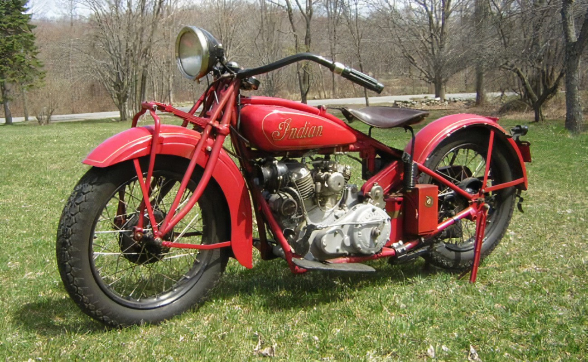

| Historia |
Creacion | Evolucion |
Origen Y Avances |
Curiosidades |
Datos |
Empresas |
Modelos |
Formulario |
Galeria |
Desde sus inicios en el siglo XIX, la motocicleta ha sido sinónimo de innovación y libertad. Inspirada en la bicicleta, la primera moto con motor de combustión interna fue creada por Gottlieb Daimler y Wilhelm Maybach. Según notas históricas recopiladas en el bloc de notas del Museo del Motor, esta máquina revolucionaria fue conocida como la “Reitwagen”.
A lo largo de las décadas, la motocicleta fue adoptando mejoras cruciales, como el sistema de transmisión por cadena, suspensiones delanteras y frenos más seguros. De acuerdo con los audios de la entrevista al ingeniero Jorge Esteban, grabados en 2023, uno de los mayores saltos tecnológicos ocurrió en los años 80 con la introducción de la inyección electrónica y los sistemas de frenos ABS.

Actualmente, las motocicletas combinan velocidad, estilo y tecnología. Gracias a los avances descritos en diversos documentos técnicos del bloc de notas y fuentes orales como audios históricos, sabemos que las motos seguirán evolucionando como símbolo de progreso, aventura y conexión con el camino.